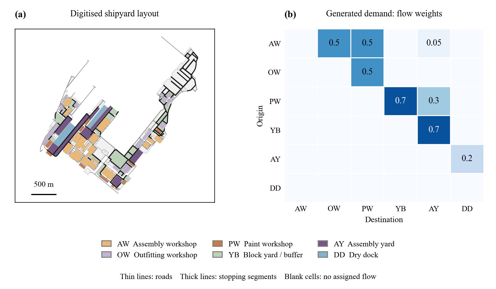

BLOCK TRANSPORTER CHOICE船厂分段运输车选型 · 研究汇报Shipyard transporter fleet study · briefing조선소 블록 트랜스포터 선정 · 연구 보고
研究进展汇报 · 2026 年 10 月Progress briefing · October 2026연구 진행 보고 · 2026년 10월
几百吨的船体分段， 该用一台大车运， 还是几台小车拼着运？Carry a heavy hull block on one big transporter, or on several small ones coupled together?수백 톤의 선체 블록, 대형 트랜스포터 한 대로 옮길까, 소형 여러 대를 결합해 옮길까?
在服务水平相同的前提下，比较船厂平板运输车的吨级选择与总成本Comparing transporter capacity tiers, and their total cost, when every fleet must deliver the same service모든 차량군이 같은 서비스 수준을 낼 때, 트랜스포터 용량 등급과 총비용 비교
Shipyard transporter capacity choice for single or coupled carriage of heavy hull blocks at equal service
Chunrui Na, Qing Wang, Xiao Han, Jingzheng Yao, Kun Ma, Youngrong Kim
目标期刊：Ocean Engineering（稿件准备中）Target journal: Ocean Engineering (manuscript in preparation)목표 저널: Ocean Engineering (원고 준비 중)
先用一分钟讲完整件事The whole study in one minute1분 만에 보는 전체 연구
1
问题Question질문
船厂要买搬运船体分段的平板车：买大车，每块单独运；还是买便宜的小车，重的分段让几台车拼起来运？A shipyard must buy transporters for hull blocks: big ones that carry every block alone, or cheaper small ones that team up for the heavy blocks?조선소가 선체 블록 운반용 트랜스포터를 사야 한다. 모든 블록을 혼자 옮기는 대형인가, 무거운 블록은 여러 대가 함께 옮기는 값싼 소형인가?
2
做法Approach방법
在计算机里模拟 36 种工况、每种 30 个工作日。给每种车队配上“达到同样准时水平”所需的最少台数，再算买车钱 + 人工钱。Simulate 36 workload conditions of 30 working days each. Give every fleet the fewest vehicles that reach the same punctuality, then add up vehicle and crew costs.36개 조건, 조건마다 30일을 컴퓨터로 모의한다. 모든 차량군에 같은 정시 수준을 내는 최소 대수를 주고 차량비와 인건비를 합산한다.
3
答案Answer답
最省钱的车队几乎每块都单独运：6,480 种成本设定中，90.8% 的最省车队拼载的分段不超过十分之一。原因：拼载同时占住几台车和几组人，而一组人比一台车还贵。The cheapest fleet carries almost every block alone: in 90.8% of 6,480 cost settings it couples at most one block in ten. Coupling holds several vehicles and crews at once, and a crew costs more than a vehicle.가장 싼 차량군은 거의 모든 블록을 단독 운반한다. 6,480개 비용 설정의 90.8%에서 결합 운반 블록이 10% 이하였다. 결합은 여러 대의 차량과 인원을 동시에 묶고, 작업 인원이 차량보다 비싸기 때문이다.
4
启示What it means시사점
买能单独运几乎所有分段的最小吨级；同时规定准时率和最大延误；台数要靠完整排班来定，简单估算会买错车。Buy the smallest tier that carries nearly every block alone; specify both punctuality and the worst delay; size the fleet by full scheduling, because rough estimates buy the wrong fleet.거의 모든 블록을 단독 운반하는 최소 등급을 사고, 정시율과 최대 지연을 함께 정하며, 대수는 완전한 스케줄링으로 정해야 한다. 어림 계산은 잘못된 차량을 사게 만든다.
拼载是补救手段，不是采购策略。Coupling is a remedy, not a purchasing strategy.결합 운반은 보완책이지 구매 전략이 아니다.
今天按这个顺序讲（点击可跳转）How this briefing is organised (click to jump)보고 순서 (클릭하면 이동)
1
背景Background배경
分段、平板运输车、拼载分别是什么？为什么“买什么车”不能靠简单算术？What are hull blocks, transporters and coupling? Why is choosing a fleet not simple arithmetic?선체 블록, 트랜스포터, 결합 운반이란 무엇인가? 차량 선택은 왜 단순 계산으로 안 되는가?
2
方法Method방법
怎么公平地比较不同车队？怎么排出一天的时刻表？怎么把车钱和人工钱放在一起算？How are fleets compared fairly? How is a day's timetable built? How are vehicle and crew costs combined?차량군을 어떻게 공정하게 비교하나? 하루 배차표는 어떻게 만드나? 차량비와 인건비는 어떻게 합치나?
3
实验Experiments실험
在什么船厂、什么分段重量和工作条件下做比较？Which yards, block masses and working conditions were used?어떤 조선소, 블록 중량, 작업 조건에서 비교했나?
4
结果Results결과
买什么最省？为什么？评估方法会不会改变答案？服务标准会不会改变答案？What is cheapest, and why? Does the evaluation method, or the service standard, change the answer?무엇이 가장 싸고 왜 그런가? 평가 방법이나 서비스 기준이 답을 바꾸나?
5
可靠性Reliability신뢰성
我们怎么检验结论？结论稳不稳？还有哪些局限？How were the results tested, how robust are they, and what are the limits?결과를 어떻게 검증했고, 얼마나 견고하며, 한계는 무엇인가?
6
进度与总结Status and summary진행 상황과 요약
还有哪些实验在跑？给船厂的建议是什么？Which runs are still going, and what do we recommend to a yard?어떤 실험이 진행 중이고, 조선소에 무엇을 권고하나?
现代船舶“分段建造”：先造一块块分段，再到船坞拼成整船Modern ships are built in blocks, which are then joined in the dock현대 선박은 블록 단위로 만든 뒤 도크에서 하나로 합친다
一条大船不是在船坞里从头造到尾，而是先切成几十到几百个分段A large ship is not built from keel to deck in the dock. It is first divided into tens to hundreds of blocks대형 선박은 도크에서 처음부터 끝까지 짓지 않는다. 먼저 수십~수백 개의 블록으로 나눈다
分段在不同车间里同时制造、装管线设备（舾装）、涂漆，最后运到船坞焊成整船Blocks are built, fitted with pipes and equipment (outfitting) and painted in different workshops at the same time, then moved to the dock and welded together블록은 여러 공장에서 동시에 제작, 배관·장비 설치(의장), 도장을 거친 뒤 도크로 옮겨 용접한다
好处：并行作业，船坞占用时间短Benefit: parallel work, so the dock is occupied for less time장점: 병행 작업으로 도크 점유 시간이 짧다
代价：几百吨的分段要在厂里反复搬运；某一次搬运晚了，下一道工序就得等Cost: blocks of hundreds of tonnes must be moved again and again; if one move is late, the next process waits대가: 수백 톤 블록을 조선소 안에서 반복해서 옮겨야 하며, 한 번이라도 늦으면 다음 공정이 기다린다
本研究关心的就是这些搬运：用什么车、用几台车来搬最省钱。This study is about those moves: which vehicles, and how many, move the blocks at least cost.이 연구가 다루는 것이 바로 이 운반이다. 어떤 차량을 몇 대 써야 가장 싸게 옮길 수 있는가.
每块分段要在车间、堆场和船坞之间被搬运好几次Each block is moved several times between workshops, yards and the dock블록은 공장, 적치장, 도크 사이를 여러 번 오간다
一块分段的典型路线（主案例中的 6 类场地）A block's typical route (the six area types of the main case)블록의 전형적인 이동 경로 (주 사례의 6개 구역 유형)
装配车间Assembly workshop조립 공장AW
→
舾装车间Outfitting workshop의장 공장OW
→
涂装车间Paint workshop도장 공장PW
→
分段堆场Block yard블록 적치장YB
→
总组场地Assembly yard총조립장AY
→
船坞Dry dock도크DD
分段：船体切成的大型结构单元，100–800 t，只能整块搬运Blocks: large structural units of the hull, 100–800 t, moved in one piece블록: 선체를 나눈 대형 구조 단위, 100–800 t, 한 덩어리로만 운반
运输车：每台约 180–390 万元（不含税），吨级越大越贵Transporters: about CNY 1.8–3.9 million each (ex VAT), rising with capacity트랜스포터: 대당 약 180만–390만 위안(부가세 제외), 용량이 클수록 비쌈
作业组：每台车 4 人（文献报道 4–5 人），按 16 h 班次计Crews: 4 workers per transporter (4–5 reported), over a 16-h shift작업 인원: 차량당 4명(문헌상 4–5명), 16시간 교대 기준
工作量：一个工作日约 97 次分段搬运Workload: about 97 block moves in a working day작업량: 하루 약 97회 블록 운반
Roh & Cha 2011; Park & Seo 2012; 价格：33 份公开中标公告prices: 33 public award notices가격: 공개 낙찰 공고 33건
平板运输车怎么搬分段：钻到下面，顶起来，开走，放下How a transporter moves a block: drive under, lift, drive off, set down트랜스포터의 블록 운반: 밑으로 들어가 들어 올리고, 이동해서 내려놓는다
① 空车开进去① Drive in empty① 빈 차로 진입分段搁在两排支墩上，车从下面的空隙开进去The block rests on supports; the vehicle drives into the gap underneath블록은 지지대 위에 놓여 있고, 차는 그 아래 공간으로 들어간다
② 液压顶升② Lift hydraulically② 유압으로 들어 올림车台升高，把分段顶离支墩，这一步叫“装”The platform rises and lifts the block off the supports: this is loading차대가 올라가 블록을 지지대에서 들어 올린다. 이것이 적재다
③ 重载慢行③ Drive loaded, slowly③ 적재 상태로 저속 주행带着分段开到目的地，速度约为空车的一半It carries the block to the destination at about half its empty speed블록을 싣고 목적지까지 간다. 속도는 빈 차의 절반 정도
④ 放下离开④ Set down, leave④ 내려놓고 떠남车台降低，分段落在新的支墩上（“卸”），空车去接下一块The platform lowers the block onto new supports (unloading), and the empty vehicle heads for the next block차대를 내려 블록을 새 지지대에 놓고(하역), 빈 차로 다음 블록을 가지러 간다
额定载重Rated capacity정격 용량
200–550 t，按吨级出售；单车不能运超过额定载重的分段200–550 t, sold in tiers; one vehicle cannot carry a block above its rating200–550 t, 등급별 판매. 정격보다 무거운 블록은 혼자 못 옮긴다
速度Speed속도
空车 12 km/h，重载 6 km/h（厂家参数）12 km/h empty, 6 km/h loaded (manufacturer data)빈 차 12 km/h, 적재 6 km/h (제조사 자료)
装 / 卸时间Loading / unloading적재 / 하역 시간
基准各 10 min；也测试了随重量变化和 30–60 min 的长装载10 min each at baseline; mass-dependent and 30–60 min loading also tested기준 각 10분. 중량 비례와 30–60분 긴 적재도 시험
人和钱Crew and price인원과 가격
每台 4 人作业组（文献 4–5 人）；单价约 180–390 万元A crew of 4 per vehicle (4–5 reported); about CNY 1.8–3.9 million each차량당 작업 인원 4명 (문헌 4–5명), 대당 약 180만–390만 위안
拼载：两三台车并排对接，像一台大车一样同步行驶Coupling: two or three transporters join side by side and drive as one결합 운반: 두세 대를 나란히 연결해 한 대처럼 동기 주행한다
载重相加：两台 270 t 并排，最多能抬 540 t；三台最多 810 tCapacities add up: two 270 t units side by side carry up to 540 t; three carry up to 810 t용량 합산: 270 t 두 대를 나란히 하면 최대 540 t, 세 대면 810 t
必须同时到场：先到的车只能等后到的车All must be there: the first to arrive waits for the others모두 도착해야 함: 먼저 온 차는 나머지를 기다린다
要对位、对接：本研究假设每次拼载多花 10 minAligning and connecting take time: 10 min extra per coupled move assumed here정렬·연결에 시간이 든다: 결합 운반마다 10분 추가로 가정
全程一起被占用：从装到卸，每台车和它的 4 人作业组都不能干别的Everyone is held throughout: from loading to unloading, every member and its 4-person crew can do nothing else전 과정 점유: 적재부터 하역까지 모든 차량과 4명의 인원이 다른 일을 못 한다
本研究一队最多 3 台车At most three vehicles per team in this study이 연구에서 한 팀은 최대 3대
拼载让轻车也能运重块，但一块分段要占用 2–3 倍的车和人。这是一个“省车钱、费车时”的交换。Coupling lets light units carry heavy blocks, but one block ties up two to three times the vehicles and crews. It trades cheaper vehicles for more vehicle time.결합 운반 덕분에 경형으로도 무거운 블록을 옮길 수 있지만, 블록 하나에 2–3배의 차량과 인원이 묶인다. 싼 차량과 더 많은 차량 시간을 맞바꾸는 셈이다.
研究问题：重分段用大车单运，还是用小车拼载？The question: buy heavy transporters, or light ones that couple?연구 질문: 대형 트랜스포터를 살까, 결합 가능한 소형을 살까?
A · 买大车，单独运A · Heavy tier, carry aloneA · 대형 등급, 단독 운반
单价高：500 t 约 361 万元Higher unit price: 500 t ≈ CNY 3.61 M단가 높음: 500 t 약 361만 위안
每次搬运只占 1 台车 · 4 人Each move occupies 1 vehicle · 4 crew운반마다 차량 1대 · 인원 4명만 점유
B · 买小车，重块拼载B · Light tier, couple for heavy blocksB · 소형 등급, 무거운 블록은 결합 운반
单价低：270 t 约 221 万元；平时各运各的轻分段Lower unit price: 270 t ≈ CNY 2.21 M; each carries light blocks on its own단가 낮음: 270 t 약 221만 위안, 평소엔 각자 가벼운 블록 운반
拼载时占 2 台车 · 8 人，要等齐，再对接 10 minA coupled move holds 2 vehicles · 8 crew, waits for both, then couples for 10 min결합 시 차량 2대 · 인원 8명 점유, 모두 도착을 기다린 뒤 10분 결합
当所有候选车队都必须达到同样的服务水平时，哪种吨级（或吨级组合）总成本最低？When every candidate fleet must deliver the same service, which capacity tier, or mix of tiers, costs least?모든 후보 차량군이 같은 서비스 수준을 내야 할 때, 어떤 용량 등급(또는 조합)의 총비용이 가장 낮은가?
为什么不能用“总工作量 ÷ 每台车的工时”来算需要几台车？Why not just divide the total work by one vehicle's working hours?왜 "총 작업량 ÷ 차량 1대 작업 시간"으로 대수를 정할 수 없나?
一个小例子：4 块分段 8:00 同时可以搬，都要求 9:00 前送到，每块搬运要 1 hA small example: 4 blocks all ready at 8:00, all due by 9:00, each move takes 1 h작은 예: 블록 4개가 모두 8:00에 준비되고 9:00까지 도착해야 하며, 운반마다 1시간
任务是分批来的，每批都有交期，忙闲不均Work arrives in batches, each with its own due times, so demand is uneven작업은 배치로 들어오고 배치마다 납기가 있어 수요가 고르지 않다
车在任务之间要空驶，先搬哪块、后搬哪块，空驶距离不同Vehicles drive empty between tasks; the order of tasks changes that distance작업 사이에 빈 차로 이동하며, 작업 순서에 따라 거리가 달라진다
拼载要几台车同时有空，一台车晚到，整队都要等A coupled move needs several free vehicles at once; one late arrival holds up the team결합 운반은 여러 대가 동시에 비어 있어야 하며, 한 대가 늦으면 팀 전체가 기다린다
所以Therefore그래서
要知道几台车够用，必须把每一天真正排出时刻表：哪台车、几点、搬哪块。本研究就是这么做的。实际数据里，简单估算在交期紧时最多少估 5 台车（结论 3）。To know how many vehicles are enough, each day's actual timetable must be built: which vehicle moves which block, and when. That is what this study does. In our data, the simple estimate fell short by up to five vehicles under tight due dates (Finding 3).몇 대면 충분한지 알려면 하루하루 실제 배차표를 만들어야 한다. 어느 차가 언제 어떤 블록을 옮기는지. 이 연구는 그렇게 했다. 실제 데이터에서 단순 추정은 납기가 촉박할 때 최대 5대까지 모자랐다 (결론 3).
已有研究都在“给定车队”下排调度，没有回答“该买什么车”Existing work schedules a given fleet; it does not say what to buy기존 연구는 주어진 차량군을 스케줄링할 뿐, 무엇을 살지는 답하지 않는다
船厂分段运输调度Shipyard block-transport scheduling조선소 블록 운반 스케줄링
两台车抬指定的大分段Two transporters for designated big blocks지정된 대형 블록을 두 대가 운반Jiang 2021; Tao 2019
从现有车池中选单车或组合Single or combined carriers from a given pool기존 차량 풀에서 단독 또는 조합 선택Shin & Bak 2014
比较同一组车的 4、5、6 台Four, five or six of one prescribed set정해진 차량 세트의 4·5·6대 비교Sun 2024
车队是给定的The fleet is given차량군은 주어진 것
车队规模与组成Fleet sizing and mix차량군 규모와 구성
先定车数，再比成本Size vehicles, then compare costs대수를 먼저 정하고 비용 비교Vis 2005; Hashemi Doulabi 2020
可重构机器人：相同基本单元拼成不同容量Reconfigurable robots: identical units form larger capacities재구성 로봇: 동일 단위가 결합해 용량 형성Albert 2025
人工成本决定车辆大小（运输经济学）Crew cost drives vehicle size (transport economics)인건비가 차량 크기를 결정 (운송 경제학)Jansson 1980
容量来自组合，不是按吨级购买Capacity comes from configuration, not a purchased tier용량은 구성에서 나오며 등급 구매가 아님
本研究补上的三点What this study adds이 연구가 더하는 세 가지
在市场上可买的吨级之间比较Compares purchasable capacity tiers구매 가능한 용량 등급 간 비교
每块分段的延误有上限：任何搬运都不能拒绝Bounds each block's delay: no move can be refused블록별 지연 상한: 어떤 운반도 거절할 수 없음
拼载占用几台车，就付几组人的工资Pays a crew for every vehicle a coupled move occupies결합 운반이 점유한 차량마다 인건비 계산
这三点决定了比较的结果These three differences decide the comparison이 세 가지가 비교 결과를 좌우
问题的输入：一个“工作日”有 97 块分段，分 8 批释放，每块都有交期The input: one working day of 97 blocks, released in 8 batches, each with a due time문제의 입력: 하루 97개 블록, 8개 배치로 투입, 블록마다 납기
一个真实的实验工作日（均匀重量 · 短装卸 · 基准交期 · 第 101 号）One actual test day (uniform masses · short handling · baseline due dates · day 101)실제 실험 작업일 하나 (균일 중량 · 짧은 적재·하역 · 기준 납기 · 101번)
每条短线 = 一块分段：左端是“可以开始搬”（释放），右端是“必须送到”（交期）Each bar is one block: the left end is when it can be moved (release), the right end when it must arrive (due)막대 하나 = 블록 하나: 왼쪽 끝은 운반 가능 시각(투입), 오른쪽 끝은 도착해야 할 시각(납기)
高度 = 分段重量，这一天在 104–500 t 之间Height = block mass, 104–500 t on this day높이 = 블록 중량, 이날은 104–500 t
每 2 h 释放一批约 12 块；给的时间是 150、180 或 210 minA batch of about 12 blocks every 2 h, each given 150, 180 or 210 min2시간마다 약 12개 블록이 투입되고, 각각 150·180·210분이 주어진다
最后一批 14:00 释放、最晚 17:30 到期，已经超过 16 h 的班次，所以常有班后作业The last batch is released at 14 h and due by 17.5 h, after the 16-h shift, so after-shift work is common마지막 배치는 14시간에 투입되어 17.5시간까지 납기라 16시간 교대를 넘으므로 교대 후 작업이 흔하다
橙色的块超过 270 t：如果买 270 t 的车，这些都要拼载（这天 62 块）Orange blocks exceed 270 t: a 270 t fleet must couple every one of them (62 on this day)주황색 블록은 270 t 초과: 270 t 차량군이라면 모두 결합 운반해야 한다 (이날 62개)
每种工况生成 30 个这样的工作日；所有车队面对的是完全相同的 30 天。Each condition has 30 such days, and every fleet faces exactly the same 30 days.조건마다 이런 작업일 30개를 만들며, 모든 차량군은 똑같은 30일을 상대한다.
核心思路：先让每个候选车队达到同样的服务，再比较成本Key idea: size every candidate fleet to the same service, then compare cost핵심 아이디어: 모든 후보 차량군을 같은 서비스 수준에 맞춘 뒤 비용을 비교
打个比方An analogy비유하자면
比较两种公交车队，不能拿“准点率 80% 的 10 辆大巴”和“准点率 99% 的 20 辆小巴”直接比价。应该先把每种车队都配到同样准点，再看谁便宜。To compare bus fleets, you cannot price 10 big buses at 80% punctuality against 20 minibuses at 99%. Size each to the same punctuality first, then see which is cheaper.버스 차량군을 비교할 때 정시율 80%인 대형 10대와 정시율 99%인 소형 20대를 그대로 비교할 수 없습니다. 각각 같은 정시율로 맞춘 뒤 어느 쪽이 싼지 봐야 합니다.
对每个吨级、每种混编，分别找出刚好达标的最少台数 K*For every tier and mix, find the smallest count K* that just qualifies등급·혼합 구성마다 목표를 겨우 충족하는 최소 대수 K*를 찾음
再用 K* 台车的资本 + 人工计算成本Then price K* vehicles: capital plus crews그다음 K*대의 자본비 + 인건비로 비용 산정
S = (θ, Tmax) = (95%, 120 min)
θ = 95%：30 天共 2,910 块中至少 2,765 块准时（最多 145 块迟到）θ = 95%: at least 2,765 of the 2,910 blocks of 30 days on time (at most 145 late)θ = 95%: 30일간 2,910개 블록 중 2,765개 이상 정시 (지연 최대 145개)
Tmax = 120 min：任何一块都不能晚于交期 120 分钟，即一个释放批次的间隔Tmax = 120 min: no block more than 120 min past its due time, one release-batch intervalTmax = 120분: 어떤 블록도 납기보다 120분 넘게 늦으면 안 됨 (투입 배치 간격 1회)
谁可以一起运？只允许“最小可行队”Who may carry a block together? Only minimal feasible teams누가 함께 운반할 수 있나? 최소 가능 팀만 허용
队伍的额定载重之和要不小于分段重量，而且去掉任何一台就不够。多出来的车只会白白占用车辆和人工。The team's rated capacities must add up to the block mass, and removing any member must make it fall short. An extra member only ties up a vehicle and its crew.팀의 정격 용량 합이 블록 중량 이상이어야 하고, 어느 한 대라도 빼면 모자라야 한다. 남는 차량은 차량과 인원만 묶어 둔다.
Σ Qk ≥ mi · Σ Qk − min Qk < mi · |S| ≤ 3
在加权投票博弈里，这叫“最小获胜联盟”In weighted voting games these are the minimal winning coalitions가중 투표 게임에서는 이를 최소 승리 연합이라 한다
轻车 + 重车的混编里，只有比重车还重的分段才会出现两种吨级混合拼载（推论 1）In a light–heavy mix, a team with both tiers forms only for blocks heavier than the heavy tier (Corollary 1)경형+대형 혼합에서 두 등급이 섞인 팀은 대형보다 무거운 블록에서만 생긴다 (따름정리 1)
同质车队中，“随时可拼”和“只在超重时拼”两种规则完全等价For a homogeneous fleet, flexible and overweight-only coupling admit the same teams단일 등급 차량군에서는 유연 결합과 초과 중량 전용 결합이 같은 팀을 허용한다
试一试Try it직접 해 보기
车型（额定载重）Transporter tier (rated capacity)트랜스포터 등급 (정격 용량)
同一天、同样 97 块分段，交给两种车队：真实的排班表The same day and the same 97 blocks, given to two fleets: the real timetables같은 날, 같은 97개 블록을 두 차량군에 맡긴 실제 배차표
270 t 车队要 9 台车、两倍的车辆工时才干完同样的活，62 块分段要两台车一起搬。在这个工况里，它连买车的钱都更多。The 270 t fleet needs 9 vehicles and twice the vehicle-hours for the same work, and 62 blocks need two vehicles each. In this condition it even costs more capital.270 t 차량군은 같은 일을 하는 데 9대와 두 배의 차량 시간이 필요하고, 62개 블록은 두 대가 함께 옮겨야 한다. 이 조건에서는 차량 구매비마저 더 많다.
每一行是一台车，色块是它在做的事；鼠标放到色块上可看是哪块分段。两张表都是 R4 存档的达标排班（各自最少台数 K*），已重新推演核对。One row per vehicle; hover a bar to see the block. Both are qualifying R4 schedules at each fleet's K*, replayed and checked.각 행은 차량 하나, 막대는 그 차량이 하는 일이다. 막대에 마우스를 올리면 블록 정보가 보인다. 두 배차표 모두 R4에 저장된 목표 충족 배차(각 최소 대수 K*)이며, 재계산으로 확인했다.
拼载的代价：几台车必须同时到场，整段路程一起被占用The price of coupling: every member must arrive, and all stay occupied for the whole move결합 운반의 대가: 모든 차량이 모여야 하고, 운반 내내 함께 묶인다
放大看一次搬运：上图怎么读One move up close: how to read the sketch운반 한 번 확대: 위 그림 읽는 법
单运：车一到就能装，卸完马上去下一个任务Alone: the vehicle loads as soon as it arrives and leaves for the next task right after unloading단독: 도착하자마자 적재하고, 하역 후 곧바로 다음 작업으로 간다
拼载：先到的轻车 1 要等轻车 2（白色），再一起对接 10 min（黄色）Coupled: Light 1 arrives first and waits for Light 2 (white), then both couple for 10 min (yellow)결합: 먼저 온 경형 1이 경형 2를 기다리고(흰색), 함께 10분간 결합한다(노란색)
之后两台车一起装、一起走、一起卸：车时和人时是单运的两倍多Then both load, travel and unload together: more than twice the vehicle-hours and crew-hours of a single move이후 함께 적재·주행·하역한다: 차량 시간과 인시가 단독의 두 배 이상
实际数据里“等”只占很小一部分；真正的成本是两台车一起被占住（见结果部分的机制页）In the data the waiting is small; the real cost is that both vehicles are held (see the mechanism slide in the results)실제 데이터에서 대기는 작다. 진짜 비용은 두 대가 함께 묶이는 것이다 (결과 부분의 메커니즘 슬라이드)
时刻表是怎么排出来的？排法多到无法逐一尝试，只能聪明地搜索How is a timetable found? There are far too many to try one by one, so we search cleverly배차표는 어떻게 찾나? 경우의 수가 너무 많아 하나씩 해 볼 수 없으니 영리하게 탐색한다
97! ≈ 10152
只算 97 块分段的先后顺序，就有约 10152 种（还没算谁和谁组队）。作为对比，宇宙中的原子约 1080 个。The order of 97 blocks alone has about 10152 possibilities, before choosing any teams. For comparison, the universe has about 1080 atoms.97개 블록의 순서만 해도 약 10152가지이며, 팀 구성은 아직 세지도 않았다. 참고로 우주의 원자 수는 약 1080개다.
所以用自适应大邻域搜索（ALNS）：从一张可行的时刻表出发，一点点改进。So we use adaptive large neighbourhood search (ALNS): start from a workable timetable and improve it step by step.그래서 적응형 대규모 이웃 탐색(ALNS)을 쓴다. 쓸 만한 배차표에서 시작해 조금씩 개선한다.
1
拆Destroy파괴
从当前时刻表里拿掉一部分任务：随机的、最晚的、空驶最多的、拼载的、同一台车的……共 7 种拆法Remove some tasks: random ones, the latest, those with most empty travel, coupled ones, one vehicle's tasks… 7 ways in all작업 일부를 뺀다: 무작위, 가장 늦은 것, 빈 차 이동이 많은 것, 결합 작업, 한 차량의 작업 등 7가지
2
补Repair복구
把拿掉的任务插回最合适的位置，同时决定由哪台车或哪一队来搬；3 种插法Reinsert them where they fit best, choosing the vehicle or team for each; 3 ways뺀 작업을 가장 알맞은 위치에 다시 넣고, 어느 차량이나 팀이 옮길지 정한다. 3가지
3
判Accept판정
新表更好就留下；偶尔也接受稍差的，免得困在“局部最优”Keep the new timetable if it is better; now and then accept a slightly worse one so the search does not get stuck새 배차표가 더 좋으면 채택하고, 가끔은 조금 나쁜 것도 받아들여 국소 최적에 갇히지 않게 한다
4
学Learn학습
记下哪种拆法、补法更常带来改进，以后多用它们，这就是“自适应”Record which destroy and repair moves pay off and use them more often: the "adaptive" part어떤 파괴·복구가 개선을 자주 가져오는지 기록해 더 자주 쓴다. 이것이 "적응형"이다
↻ 每次运行重复 786 轮。开始前先用贪心、后悔值插入和 5,000 次随机构造，取最好的一张作为起点。↻ 786 rounds per run, starting from the best of greedy, regret insertion and 5,000 random constructions.↻ 실행마다 786회 반복. 시작 배차표는 탐욕 구성, 후회값 삽입, 무작위 구성 5,000회 중 가장 좋은 것.
两张时刻表比好坏时的优先顺序How two timetables are ranked두 배차표를 비교하는 우선순위
① 晚于交期 120 min 以上的块数 → ② 迟到的块数 → ③ 总迟延时间 → ④ 作业人工。前一项多一块，后面几项再好也不行。① Blocks more than 120 min late → ② late blocks → ③ total delay → ④ crew time. One more block on an earlier item outweighs any gain on the later ones.① 납기보다 120분 넘게 늦은 블록 수 → ② 지연 블록 수 → ③ 총 지연 시간 → ④ 작업 인시. 앞 항목에서 한 개가 더 많으면 뒤 항목이 아무리 좋아도 소용없다.
每一步推演时，同一队的几台车一起更新，保证拼载同步。在 8–15 块的小实例上与精确最优解对照，平均差距 0.06–0.28%，最大 2.9%（旧目标函数）；新目标下的精确对照（V1）正在进行。Each step updates a team's members together. On instances of 8–15 blocks the mean gap to proven optima was 0.06–0.28%, at most 2.9% (earlier objective); V1 checks the current one.매 단계에서 한 팀의 차량을 함께 갱신해 결합 운반의 동기화를 보장한다. 블록 8–15개의 소규모 인스턴스에서 증명된 최적해와의 평균 차이는 0.06–0.28%, 최대 2.9% (이전 목적함수). 현재 목적함수의 정확해 비교(V1)는 진행 중.
方法：四步，把每个车队“配到同样服务”后再定价Method: four steps from a service target to a price방법: 서비스 목표에서 가격까지 네 단계
1
规定服务Set the service서비스 규정
S = (95%, 120 min)
2
完整调度Schedule스케줄링
每个实例、每个台数都用 ALNS 排出完整时刻表ALNS builds a full timetable for every instance and count인스턴스·대수마다 ALNS로 전체 시간표 작성
3
对称台数扫描Symmetric count scan대칭 대수 스캔
达标就减一台，不达标就加一台，得到 K*Down while it qualifies, up while it fails, giving K*충족하면 줄이고 못 하면 늘려 K* 도출
4
定价比较Price and compare가격 비교
C(r) = r·P + L
P：资本（以 270 t 车为 1）；L：每天人工（人时）P: capital, one 270 t = 1; L: labour-hours per dayP: 자본 (270 t 1대 = 1), L: 하루 인시
台数扫描示例（某一吨级、某一工况，30 天实例）Count scan, one tier in one condition (30 daily instances)대수 스캔 예시 (한 등급, 한 조건, 30일 인스턴스)
K = 3不达标fails미충족
K = 4K*−1：再多跑 2 次，仍不达标K*−1: two more runs, still failsK*−1: 2회 추가 실행, 여전히 미충족
K* = 5最少达标台数smallest qualifying count최소 충족 대수
K = 6达标qualifies충족
K = 7达标qualifies충족
每个吨级、每种混编各扫各的，只用自己的运行结果，搜索规则相同，比较才公平Each tier and mix is scanned on its own runs with identical search rules, so the comparison is fair등급·혼합마다 자기 실행 결과만으로, 같은 탐색 규칙으로 스캔하므로 공정하게 비교됨
每个车队都用同样的搜索预算和随机种子规则Every fleet gets the same search budget and random-seed rule모든 차량군에 같은 탐색 예산과 난수 시드 규칙을 적용
车钱和人工钱怎么放在一起比？都换成“人时”（一个工人干一小时的钱）How can vehicle money and crew money be compared? Convert both to labour-hours차량비와 인건비를 어떻게 비교하나? 둘 다 인시(노동자 1명의 1시간 비용)로 환산한다
车的钱Vehicle차량221.5 万元CNY 2.21 M221.5만 위안
一台 270 t 车的价格（不含税，按中标价拟合）Price of one 270 t transporter (ex VAT, fitted to award prices)270 t 트랜스포터 1대 가격 (부가세 제외, 낙찰가 적합)
→
32.9 万元/年CNY 329 k / yr32.9만 위안/년
按 8 年、年利率 4% 摊还（资本回收系数 0.1485）Spread over 8 years at 4% interest (capital recovery factor 0.1485)8년, 연이율 4%로 분할 상환 (자본 회수 계수 0.1485)
→
1,316 元/天CNY / day위안/일
每年 250 个工作日250 working days a year연 250 작업일
人的钱Labour인건비79,182 元/年CNY / yr위안/년
全国制造业生产人员平均工资（国家统计局，2025）Average wage of manufacturing production workers in China (NBS, 2025)중국 제조업 생산직 평균 임금 (국가통계국, 2025)
→
× 1.3 ÷ 2,000 h
加 30% 企业附加成本（社保等），每年 2,000 工时Plus 30% employer on-costs (social insurance etc.), 2,000 hours a year사업주 부담 30% (사회보험 등) 추가, 연 2,000시간
→
51.5 元/人时CNY / labour-h위안/인시
一个工人干一小时的成本Cost of one worker for one hour노동자 1명의 1시간 비용
价格比Price ratio가격비r = 1,316 ÷ 51.5 = 25.6
一台 270 t 车每天的资本成本 = 25.6 个人时One 270 t transporter's daily capital cost = 25.6 labour-hours270 t 1대의 하루 자본비 = 25.6인시
对比Compare비교64
一台车的作业组每天：4 人 × 16 h = 64 人时One vehicle's crew per day: 4 workers × 16 h = 64 labour-hours차량 1대 작업 인원의 하루: 4명 × 16시간 = 64인시
总成本Total cost총비용C = r·P + L
P：车队的钱相当于几台 270 t 车；L：车队每天的总人时P: the fleet's price in units of one 270 t transporter; L: the fleet's labour-hours per dayP: 차량군 가격을 270 t 대수로 환산, L: 차량군의 하루 총 인시
换成上海制造业工资（120.1 元/人时）时 r = 11.0。年限 8–15 年、利率 4–8%、每年 250–300 个工作日等 144 种组合下，r 在 5.1–30 之间，所以所有结果都在这个范围内报告，不押注某一个值。With the Shanghai manufacturing wage (CNY 120.1 per labour-hour), r = 11.0. Over 144 combinations of 8–15 years, 4–8% interest and 250–300 working days, r lies between 5.1 and 30, so every result is reported across that range rather than at one value.상하이 제조업 임금(120.1위안/인시)을 쓰면 r = 11.0이다. 8–15년, 이자율 4–8%, 연 250–300 작업일 등 144개 조합에서 r은 5.1–30이므로, 모든 결과를 한 값이 아니라 이 범위 전체에서 보고한다.
价格：一台车的资本，比不过一组人的工资Prices: a vehicle's capital against its crew's wages가격: 차량의 자본비 대 작업 인원의 인건비
39 台车的中标单价（33 份公开中标公告，2022–2026，不含税）Unit award prices of 39 transporters (33 public award notices, 2022–2026, ex VAT)트랜스포터 39대 낙찰 단가 (공개 낙찰 공고 33건, 2022–2026, 부가세 제외)
单一幂律被失拟检验拒绝（p = 0.039）；分段线性和幂指数 0.72–0.96 作为敏感性情形。A single power law is rejected by a lack-of-fit test (p = 0.039); piecewise-linear and power laws with exponents 0.72–0.96 are sensitivity cases.단일 거듭제곱 법칙은 적합 결여 검정에서 기각(p = 0.039). 구간 선형과 지수 0.72–0.96의 거듭제곱 법칙은 민감도 사례.
每台车每天：资本成本（柱）与一组人的工资（虚线），单位：人时Per transporter and day: capital (bars) against one crew (dashed), in labour-hours차량 1대·하루당: 자본비(막대) 대 작업 인원(점선), 단위: 인시
r = 一台 270 t 车每天分摊的资本成本折合多少人时。按 8–15 年、4–8% 利率、全国与上海工资标定，r ∈ [5.1, 30]。r = daily capital cost of one 270 t transporter in labour-hours. Calibrated over 8–15 years, 4–8% interest and national or Shanghai wages: r ∈ [5.1, 30].r = 270 t 트랜스포터 1대의 하루 자본비를 인시로 환산한 값. 8–15년, 이자율 4–8%, 전국·상하이 임금으로 보정: r ∈ [5.1, 30].
方法全景：一张图看整篇论文的架构（论文插图）The whole method on one page: the paper's framework figure한 장으로 보는 논문 전체 구조 (논문 그림)
左：输入，分段搬运任务、试验工况、道路网络、候选车队和价格Left: inputs, the block moves, test conditions, road network, candidate fleets and prices왼쪽: 입력. 블록 운반 작업, 시험 조건, 도로망, 후보 차량군, 가격
① 服务标准 S = (θ, Tmax)，所有车队都一样① Service specification S = (θ, Tmax), the same for every fleet① 서비스 규정 S = (θ, Tmax), 모든 차량군에 동일
② 调度 ⇄ ③ 台数扫描：排时刻表，增减台数，直到刚好达标（K*）② Scheduling ⇄ ③ count scan: build timetables and change the count until it just qualifies (K*)② 스케줄링 ⇄ ③ 대수 스캔: 배차표를 만들고 대수를 바꿔 겨우 충족(K*)할 때까지
④ 定价：C = r·P + L，车钱 + 人工④ Pricing: C = r·P + L, capital plus crew labour④ 가격 산정: C = r·P + L, 자본비 + 인건비
右：输出，最便宜的车队，以及它回答的三个问题Right: output, the cheapest fleet and the three questions it answers오른쪽: 출력. 가장 싼 차량군과 그것이 답하는 세 질문
底部：稳健性与验证Bottom: robustness and validation checks아래: 강건성과 검증
点图可在新页面放大。Click the figure to open it full size.그림을 누르면 크게 볼 수 있다.
实验：一个数字化船厂 + 一个公开数据船厂Experiments: one digitised yard and one yard with published data실험: 디지털화한 조선소 하나 + 공개 데이터 조선소 하나

左：由卫星图数字化的韩国巨济岛某大型船厂道路与场地；右：8 条加权物流方向。任务位置与释放时间为生成场景。Left: roads and areas of a large shipyard on Geoje Island, South Korea, digitised from satellite imagery. Right: the eight weighted flows. Task locations and release times are generated scenarios.왼쪽: 위성 사진으로 디지털화한 한국 거제도 대형 조선소의 도로와 구역. 오른쪽: 가중 물류 흐름 8개. 작업 위치와 투입 시각은 생성한 시나리오.
97 次 / 天moves / day회 / 일
16 h 班次，8 个批次，每 2 h 释放一批16-h shift, eight release batches 2 h apart16시간 교대, 2시간 간격 8개 투입 배치
36 × 30
36 种工况 = 6 种分段重量 × 3 种装卸时间 × 2 种交期；每种 30 个工作日36 conditions = 6 mass scenarios × 3 handling settings × 2 due-date settings; 30 working days each36개 조건 = 중량 시나리오 6 × 적재·하역 시간 3 × 납기 설정 2, 조건마다 30일
384
车队系列：9 个吨级（200–550 t）+ 2 种混编（270 t + 1 或 2 台重车），各自扫描 K*fleet series: 9 tiers (200–550 t) + 2 mixes (270 t with 1 or 2 heavy units), each scanned for K*차량군 시리즈: 9개 등급(200–550 t) + 혼합 2종(270 t + 대형 1 또는 2대), 각각 K* 스캔
6,480
成本设定 = 36 工况 × 5 条价格曲线 × 9 个 r × 4 种人工口径cost settings = 36 conditions × 5 price curves × 9 values of r × 4 labour measures비용 설정 = 36개 조건 × 가격 곡선 5 × r 값 9 × 인건비 기준 4
50 次 / 周moves / week회 / 주
第二船厂：上海外高桥造船公开的一周任务（204–399 t，Liu et al. 2022）Second yard: a published week at Shanghai Waigaoqiao Shipbuilding (204–399 t, Liu et al. 2022)두 번째 조선소: 상하이 와이가오차오 조선의 공개된 1주일 작업 (204–399 t, Liu et al. 2022)
36 种工况 = 6 种分段重量 × 3 种装卸时间 × 2 种交期36 conditions = 6 mass scenarios × 3 handling settings × 2 due-date settings36개 조건 = 중량 시나리오 6 × 적재·하역 시간 3 × 납기 설정 2
6 种分段重量：30 天共 2,910 块的重量分布（虚线 = 270 t）Six mass scenarios: masses of the 2,910 blocks in 30 days (dashed line = 270 t)중량 시나리오 6개: 30일간 블록 2,910개의 중량 분포 (점선 = 270 t)
3 种装卸时间Three handling settings적재·하역 시간 3가지
短（基准）：装 10 min + 卸 10 min（Liu 2022）Short (baseline): 10 min loading + 10 min unloading (Liu 2022)짧음 (기준): 적재 10분 + 하역 10분 (Liu 2022)
随重量：每次 10–20 min + 0.05 × 重量 − 5 min（Kim & Joo）Mass-dependent: 10–20 min + 0.05 × mass − 5 min per operation (Kim & Joo)중량 비례: 회당 10–20분 + 0.05 × 중량 − 5분 (Kim & Joo)
长装载：装 30–60 min + 卸 10 minLong loading: 30–60 min loading + 10 min unloading긴 적재: 적재 30–60분 + 하역 10분
2 种交期Two due-date settings납기 설정 2가지
基准：释放后 150 / 180 / 210 min 内送到（概率 0.6 / 0.2 / 0.2，Roh & Cha 2011）Baseline: deliver within 150 / 180 / 210 min of release (probabilities 0.6 / 0.2 / 0.2, Roh & Cha 2011)기준: 투입 후 150 / 180 / 210분 이내 도착 (확률 0.6 / 0.2 / 0.2, Roh & Cha 2011)
紧：释放后 120–150 min 内送到（假设）Tight: within 120–150 min of release (assumed)촉박: 투입 후 120–150분 이내 (가정)
没有公开数值的参数（对接时间、紧交期、部分重量场景）都标为“假设”，并在敏感性实验 E5 中改变它们，找出改变结论的临界值。Parameters without published values (coupling time, tight due dates, some mass scenarios) are marked as assumed and varied in the sensitivity runs (E5) to find where the answer changes.공개된 값이 없는 매개변수(결합 시간, 촉박한 납기, 일부 중량 시나리오)는 "가정"으로 표시하고, 민감도 실험 E5에서 바꿔 결론이 바뀌는 경계를 찾는다.
自己算一算：选一个工况和价格比，看哪种车队最便宜Try it: pick a condition and a price ratio, and see which fleet is cheapest직접 계산: 조건과 가격비를 고르면 어느 차량군이 가장 싼지 보여 준다
每天成本 C = r × P + L（单位：人时/天）。P：车队价格折合几台 270 t 车（仿射价格曲线）；混编中的重车按 500 t（Jiang、偏轻、均匀）、425 t（Liu）或 550 t 计价。班次人工 = 每台车 64 人时；运营人工只计排班中实际干活的时间。Daily cost C = r × P + L (labour-hours per day). P: the fleet's price in units of one 270 t transporter (affine price curve); heavy members of mixes are priced at 500 t (Jiang, light-skewed, uniform), 425 t (Liu) or 550 t. Shift staffing = 64 labour-hours per vehicle; operating measures count only the work in the timetable.하루 비용 C = r × P + L (인시/일). P: 차량군 가격을 270 t 대수로 환산 (아핀 가격 곡선), 혼합 차량군의 대형은 500 t (Jiang·경량 편중·균일), 425 t (Liu) 또는 550 t로 계산. 교대 인원 = 차량당 64인시, 운영 기준은 배차표상 실제 작업 시간만 계산.
结论 1：最省钱的车队，几乎每块都单独运Finding 1: the cheapest fleet carries almost every block alone결론 1: 가장 싼 차량군은 거의 모든 블록을 단독 운반한다
90.8%
的成本设定里，最省车队拼载的分段 ≤ 1/10（共 6,480 个）of the 6,480 cost settings: the cheapest fleet coupled at most one block in ten의 비용 설정(총 6,480개)에서 최저비용 차량군의 결합 운반 블록 ≤ 10%
57.5%
完全不拼载coupled no block at all결합 운반이 전혀 없음
1.2%
全是轻车（≤ 325 t）、重块只能拼载的同质车队胜出all-light homogeneous fleets (≤ 325 t), which must couple every heavier block, were cheapest무거운 블록을 모두 결합해야 하는 경형(≤ 325 t) 단일 차량군이 최저
26.1%
轻车 + 1–2 台重车的混编胜出，重车只运最重的块a light fleet with 1–2 heavy units won; the heavy units carry the heaviest blocks alone경형 + 대형 1–2대 혼합이 최저, 대형은 가장 무거운 블록만 단독 운반
换人工计价口径，结论不变（拼载 ≤ 1/10 的比例）Holds under every labour measure (share coupling ≤ one in ten)모든 인건비 기준에서 성립 (결합 ≤ 10% 비율)
班次人工Shift staffing교대 인원91.0%
班次 + 加班计价Shift + after-shift교대 + 연장 근무91.1%
运营人工（按车）Operating, per vehicle운영 인원 (차량별)94.0%
运营人工（按队）*Operating, per team*운영 인원 (팀별)*86.9%
* 拼载时释放多余班组，对拼载最有利的口径surplus crews released during joint service: the measure most favourable to coupling결합 운반 중 남는 인원을 풀어 주는 기준으로, 결합 운반에 가장 유리함
怎么读：一个“成本设定” = 一个工况 + 一条价格曲线 + 一个价格比 r + 一种人工口径，共 36 × 5 × 9 × 4 = 6,480 个。在每个设定里找出最便宜的车队，再统计它拼载了多少分段。How to read this: one cost setting = one condition + one price curve + one price ratio r + one labour measure, 36 × 5 × 9 × 4 = 6,480 in all. In each setting we find the cheapest fleet and count how many blocks it couples.읽는 법: 비용 설정 하나 = 조건 하나 + 가격 곡선 하나 + 가격비 r 하나 + 인건비 기준 하나, 총 36 × 5 × 9 × 4 = 6,480개. 설정마다 가장 싼 차량군을 찾고, 그것이 결합 운반한 블록 수를 센다.
拼载是补救手段，不是采购策略。Coupling is a remedy, not a purchasing strategy.결합 운반은 보완책이지 구매 전략이 아니다.
全景：36 种工况 × 9 个价格比，哪种车队最便宜The full picture: the cheapest fleet in 36 conditions × 9 price ratios전체 그림: 36개 조건 × 가격비 9개에서 최저비용 차량군
颜色：胜出的车队类型Colour: the winning fleet type색: 최저비용 차량군 유형
数字：胜出车队拼载的分段比例（%）Number: % of blocks the winner couples숫자: 승자가 결합 운반한 블록 비율(%)
斜线：按天重抽样时胜者支持率 < 80%（两车队几乎打平）Hatching: winner kept in < 80% of day resamples (near tie)빗금: 일자 재표본에서 승자 유지 < 80% (거의 동률)
红点：弱搜索依赖，多搜一点可能翻转Red dot: weak search dependence, a little more search could flip it빨간 점: 약한 탐색 의존성, 탐색을 조금 더 하면 뒤집힐 수 있음
把鼠标移到格子上查看细节。Hover a cell for details.칸에 마우스를 올리면 세부 정보가 표시됩니다.
仿射价格曲线。混编：轻车 270 t；重车按工况计价为 500 t 或 425 t。“超重 · 短 · 基准”一行有已知漏判：2 重车混编其实在 89 个班次配员设定中比 550 t 便宜（见“超重才拼”一页）。Affine price curve. Mixes: 270 t light units; heavy units priced as 500 t or 425 t by condition. The extra-heavy · short · base row has a known error: the two-heavy mix is in fact cheaper than 550 t in 89 shift-staffing settings (see the overweight-only slide).선형(아핀) 가격 곡선. 혼합: 경형 270 t, 대형은 조건에 따라 500 t 또는 425 t로 가격 산정. "초중량 · 짧음 · 기준" 행에는 알려진 오류가 있다: 대형 2대 혼합이 89개 교대 인원 설정에서 실제로 550 t보다 싸다 ("초과 중량 결합" 슬라이드 참조).
为什么：拼载贵在“占用”，不在“等待”Why: coupling costs through occupation, not waiting이유: 결합 운반의 비용은 대기가 아니라 점유에서 나온다
384 个车队系列：拼载占服务时间的比例 vs 比本工况最省车队贵多少384 fleet series: coupled share of service time against cost above the cheapest fleet of the condition차량군 시리즈 384개: 결합 운반이 서비스 시간에서 차지하는 비율 대 해당 조건 최저비용 대비 추가 비용r = 12.4 · 班次人工shift staffing교대 인원
每个点 = 某工况下的一种车队（共 384 个）。横轴：它的车辆服务时间（装、运、卸）中有多少花在拼载任务上；纵轴：它比该工况里最便宜的车队贵多少。Each dot is one fleet in one condition (384 in all). Horizontal: the share of its service time (loading, carrying, unloading) spent on coupled moves. Vertical: how much more it costs than the cheapest fleet of that condition.점 하나 = 한 조건의 차량군 하나 (총 384개). 가로: 서비스 시간(적재·운반·하역) 중 결합 운반에 쓴 비율, 세로: 해당 조건 최저비용 차량군보다 얼마나 비싼가.
0.19% 中位median중앙값
最省车队里，等队友到齐的时间只占车辆工作时间的 0.19%（最多 1.00%）In the cheapest fleets, waiting for team members took 0.19% of transporter time (at most 1.00%)최저비용 차량군에서 팀원을 기다린 시간은 차량 작업 시간의 0.19% (최대 1.00%)
9.0% vs 41.7%
拼载占服务时间：最省车队中位 9.0%，全部系列中位 41.7%。越依赖拼载，越需要多买车Coupled share of service time: median 9.0% in the cheapest fleets, 41.7% over all series. The more a fleet couples, the more vehicles it needs결합 운반의 서비스 시간 비율: 최저비용 차량군 중앙값 9.0%, 전체 시리즈 41.7%. 결합에 의존할수록 더 많은 차량이 필요
64 > 53
一台车的班组每天 64 人时，大于最贵的 550 t 车在 r = 30 时的每天资本 53 人时：人比车贵One crew costs 64 labour-hours a day, more than the 53 of a 550 t transporter's capital even at r = 30: crews outweigh vehicles작업 인원은 하루 64인시로, r = 30에서도 550 t 차량 자본비 53인시보다 크다: 사람이 차보다 비싸다
换一个船厂，答案相同：425 t 最省A second yard gives the same answer: 425 t is cheapest두 번째 조선소에서도 같은 답: 425 t가 최저
数据Data데이터
上海外高桥造船公开的一周 50 次分段搬运，分段重 204–399 t，原车队 5 台（250–420 t）。按周重采样出每种工作量的 30 个日实例，工作量放大 k 倍，从零开始配车，10 h 班次。A published week of 50 block moves at Shanghai Waigaoqiao Shipbuilding, 204–399 t, with a fleet of five (250–420 t). Thirty daily instances per workload multiple k are resampled from that week, and fleets are sized from scratch over a 10-h shift.상하이 와이가오차오 조선이 공개한 1주일 블록 운반 50회, 블록 204–399 t, 기존 차량 5대(250–420 t). 작업량 배수 k마다 그 주에서 30개 일 인스턴스를 재표본하고, 10시간 교대로 처음부터 차량을 산정.
k = 6、8 时，425 t 只需 5 台和 6 台，与 500、550 t 并列最少At k = 6 and 8, 425 t needs only five and six transporters, tied fewest with 500 and 550 tk = 6, 8에서 425 t는 5대와 6대만 필요, 500·550 t와 함께 최소
在所有标定价格下都最便宜，比第二名低 2.2–7.5%Cheapest at every calibrated price, 2.2–7.5% below the runner-up보정된 모든 가격에서 최저, 2위보다 2.2–7.5% 낮음
主船厂里用 Liu 分段重量的 6 种工况，在 11 种标准车队中同样是 425 t 在所有价格下最省；再加入“300 t + 425 t”混编后，混编更省（见下一页）In the main yard, the six conditions with Liu masses also pick 425 t among the 11 standard fleets at every price; once 300 t + 425 t mixes are added, a mix is cheaper (next slide)주 조선소의 Liu 중량 6개 조건에서도 표준 차량군 11개 중에서는 모든 가격에서 425 t가 최저다. "300 t + 425 t" 혼합을 더하면 혼합이 더 싸다 (다음 슬라이드)
重分段占多少，才值得全部买能单独运每一块的 550 t？How many heavy blocks justify an all-550 t fleet that carries every block alone?무거운 블록이 얼마나 많아야 모든 블록을 단독 운반하는 550 t를 다 살 만한가?
最省车队随重分段占比 p 的变化（仿射价格 · 班次人工；9 个价格比结果相同）Cheapest fleet by heavy-block share p (affine price · shift staffing; the same at all nine price ratios)무거운 블록 비율 p에 따른 최저비용 차량군 (아핀 가격 · 교대 인원, 가격비 9개 모두 동일)
另生成 30 个工作日：其中占比 p 的分段重 350–540 t，其余 100–300 t，p 从 0 到 50%。30 further days in which a share p of the blocks weighs 350–540 t and the rest 100–300 t, with p from 0 to 50%.추가로 30일을 생성: 비율 p의 블록은 350–540 t, 나머지는 100–300 t, p는 0–50%.
550 t 开始最省的门槛：短装卸在 p = 35%–50% 之间，随重量变化的装卸在 10%–20% 之间；对所有价格曲线和价格比都一样The 550 t tier becomes cheapest between p = 35% and 50% with short handling and between 10% and 20% with mass-dependent handling, for every price curve and ratio550 t가 최저가 되는 문턱: 짧은 적재·하역은 p = 35–50%, 중량 비례는 10–20% 사이. 모든 가격 곡선과 가격비에서 동일
低于门槛时：p ≤ 5% 买 300 t，中间买 270 t 轻车加 1–2 台 550 t；它们拼载的分段 ≤ 4.4%Below the threshold: the 300 t tier for p ≤ 5%, a 270 t fleet with one or two 550 t units in between; they couple at most 4.4% of blocks문턱 아래: p ≤ 5%는 300 t, 그 사이는 270 t 경형에 550 t 1–2대. 결합 블록은 4.4% 이하
这些决定大多依赖搜索：短装卸 63 / 63 个、随重量装卸 41 / 63 个（仿射价格、班次人工）。Most of these decisions depend on search: 63 of 63 with short handling and 41 of 63 with mass-dependent handling (affine price, shift staffing).이 결정 대부분은 탐색에 의존한다: 짧은 적재·하역 63/63, 중량 비례 41/63 (아핀 가격, 교대 인원).
再加入“300 t 轻车 + 几台 425 t 重车”：在 Liu 重量下，这种混编比全 425 t 更省Add light-plus-heavy mixes: under Liu masses, 300 t units with a few 425 t units beat an all-425 t fleet"300 t 경형 + 425 t 대형 몇 대"를 더하면: Liu 중량에서 이 혼합이 425 t 단일보다 싸다新结果new새 결과
Liu 重量 · 短装卸 · 基准交期；车速取厂家参数（对混编最不利的口径）；每天成本，班次人工Liu masses · short handling · baseline due dates; manufacturer speeds (the case least favourable to mixes); daily cost, shift staffingLiu 중량 · 짧은 적재·하역 · 기준 납기, 제조사 속도 (혼합에 가장 불리한 조건), 하루 비용, 교대 인원
个成本设定中 300 t + 425 t 混编最便宜；其余由 500 t 胜出，此时混编最多只贵 0.5%cost settings where a 300 t + 425 t mix is cheapest; 500 t wins the rest, and there the mix costs at most 0.5% more개 비용 설정에서 300 t + 425 t 혼합이 최저. 나머지는 500 t가 이기며, 그때 혼합은 최대 0.5%만 비싸다
5 = 5
台数一样：2 台 300 t + 3 台 425 t 与 5 台 425 t 都是 5 台，但前者车价更低（P = 6.44 对 7.13），而且几乎不拼载（0.1%）Same count: 2 × 300 t + 3 × 425 t and 5 × 425 t are both five vehicles, but the mix costs less capital (P = 6.44 vs 7.13) and almost never couples (0.1%)대수는 같다: 300 t 2대 + 425 t 3대와 425 t 5대 모두 5대지만, 혼합의 차량 가격이 더 낮고 (P = 6.44 대 7.13) 결합 운반이 거의 없다 (0.1%)
原因：Liu 的分段重 204–399 t，44% 超过 300 t。这些重块交给 3 台 425 t 单独运，其余交给 300 t 车：没有块需要拼载，贵车也只买需要的数量。这正是结论 1 说的“轻车 + 少量重车”。Why: Liu blocks weigh 204–399 t and 44% exceed 300 t. Three 425 t units carry those alone and the 300 t units carry the rest, so no block needs coupling and the yard buys only as many dear vehicles as it needs. This is the "light fleet with a few heavy units" of Finding 1.이유: Liu 블록은 204–399 t이고 44%가 300 t를 넘는다. 이 무거운 블록은 425 t 3대가 단독으로 옮기고 나머지는 300 t가 옮기므로, 결합 운반이 필요 없고 비싼 차량도 필요한 만큼만 산다. 결론 1의 "경형 + 소수의 대형"이 바로 이것이다.
如果混编只许“超重才拼”？大多数混编达不到服务标准，买车成本最多高 9.4%What if mixes may couple only for overweight blocks? Most mixes miss the target, and cost rises by up to 9.4%혼합 차량군이 "초과 중량일 때만 결합"한다면? 대부분 목표에 못 미치고 비용은 최대 9.4% 오른다新结果new새 결과
两种拼载规则Two coupling rules두 가지 결합 규칙
灵活拼载（本研究主口径）：任何最小可行队都行，例如车队里有 500 t 车，两台 270 t 也可以合运 400 t 的块Flexible (main rule): any minimal team, e.g. two 270 t units may carry a 400 t block even with a 500 t unit in the fleet유연 결합 (주 규칙): 어떤 최소 가능 팀도 허용. 예를 들어 500 t가 있어도 270 t 두 대가 400 t 블록을 옮길 수 있다
超重才拼（Jiang 2021、Tao 2019 的做法）：只要车队里有一台车能单独运，就必须由它单独运Overweight-only (as in Jiang 2021, Tao 2019): if any vehicle in the fleet can carry the block alone, it must초과 중량 결합 (Jiang 2021, Tao 2019 방식): 차량군 중 한 대라도 단독 운반이 가능하면 그 차량이 옮겨야 한다
同质车队两种规则完全一样，只影响“270 t + 1 或 2 台重车”的混编For a homogeneous fleet the two rules coincide; only the 270 t + 1 or 2 heavy mixes are affected단일 등급 차량군에서는 두 규칙이 같고, "270 t + 대형 1 또는 2대" 혼합만 영향을 받는다
66 / 72个“超重才拼”的混编系列，加到起始台数 + 4 台仍达不到服务标准：重块全压在 1–2 台重车上overweight-only mixes miss the target even at the start count + 4: heavy blocks queue for one or two heavy units개 "초과 중량 결합" 혼합 시리즈는 시작 대수 + 4대에서도 목표 미달: 무거운 블록이 모두 대형 1–2대에 몰린다
换成“超重才拼”后，最省车队贵了多少（仿射价格 · 班次人工）How much dearer the cheapest fleet becomes under overweight-only coupling (affine price · shift staffing)"초과 중량 결합"으로 바꾸면 최저비용 차량군이 얼마나 비싸지는가 (아핀 가격 · 교대 인원)
决定一个车队需要几台车，有三种做法Three ways to decide how many vehicles a fleet needs차량군에 필요한 대수를 정하는 세 가지 방법
① 负荷估算（只看输入）① Load estimate (inputs only)① 부하 추정 (입력만)
Kρ = 使“Σ 标准工时 ÷ (K × 16 h) ≤ 1”的最少 KKρ = smallest K with Σ nominal work ÷ (K × 16 h) ≤ 1Kρ = "Σ 표준 작업 시간 ÷ (K × 16시간) ≤ 1"인 최소 K
把一天所有搬运的标准工时加起来，除以“台数 × 16 h”，取比值不超过 1 的最少台数。Add up the nominal work of all moves in a day, divide by vehicles × 16 h, and take the fewest vehicles with a ratio of at most 1.하루 모든 운반의 표준 작업 시간을 합해 "대수 × 16시간"으로 나누고, 비율이 1 이하인 최소 대수를 택한다.
+几秒钟，不用排班Takes seconds, no scheduling몇 초, 스케줄링 불필요
−看不到批次和交期（第 9 页的小例子）Blind to batches and due dates (the small example earlier)배치와 납기를 보지 못함 (앞의 작은 예)
② 贪心排班② Greedy scheduling② 탐욕 배차
按释放顺序 → 最早能开工的车 / 队 → 不回头by release time → earliest-starting vehicle or team → no revision투입 순서 → 가장 빨리 시작하는 차량/팀 → 수정 없음
按时间顺序，每块交给最早能开始的车或车队，排完就定，不回头修改。很多调度软件和人工派车都类似这样。Take blocks in time order and give each to the vehicle or team that can start it earliest, never revising. Much dispatching software, and many human dispatchers, work like this.시간 순서대로 블록마다 가장 빨리 시작할 수 있는 차량이나 팀에 맡기고 다시 고치지 않는다. 많은 배차 소프트웨어와 사람의 배차가 이와 비슷하다.
+真的排了班；每个车队系列的整条台数扫描中位只要 13 sBuilds a real timetable; a full count scan takes a median 13 s per fleet series실제 배차표를 만든다. 시리즈당 전체 대수 스캔 중앙값 13초
−早先的选择无法纠正，容易浪费车Early choices cannot be corrected, which wastes vehicles초기 선택을 바로잡지 못해 차량을 낭비하기 쉽다
③ 完整搜索（本研究）③ Full search (this study)③ 완전 탐색 (본 연구)
每个实例 ALNS 786 轮 → 在 K*−1 处再跑 2 次ALNS, 786 rounds per day → 2 more runs at K*−1하루당 ALNS 786회 → K*−1에서 2회 추가
ALNS 反复改进时刻表，并在 K*−1 处再多跑两次，确认少一台确实不行。ALNS improves the timetable repeatedly, with two more runs at K*−1 to confirm that one vehicle fewer really fails.ALNS로 배차표를 반복 개선하고, K*−1에서 두 번 더 실행해 한 대 적으면 정말 안 되는지 확인한다.
+最接近真正需要的台数Closest to the number really needed실제 필요 대수에 가장 가깝다
−慢：每个车队系列中位约 0.9 h 计算；主实验共 7 万多次运行Slow: a median of about 0.9 h of computing per fleet series; over 70,000 runs in the main experiment느림: 시리즈당 계산 시간 중앙값 약 0.9시간, 주 실험 7만 회 이상 실행
问题：用前两种简单办法，会不会买到不同的车？The question: do the two simpler methods buy a different fleet?질문: 앞의 두 간단한 방법을 쓰면 다른 차량을 사게 되는가?
结论 3：用简化方法评估车队，会买错车Finding 3: simplified evaluation changes the purchase결론 3: 간소화된 평가는 구매 결정을 바꾼다
不同评估强度下，选中的车队与最终结果相同的比例（1,620 个设定，班次人工）Settings where each evaluation level picks the same fleet as the final scan (1,620, shift staffing)평가 수준별로 최종 스캔과 같은 차량군을 고른 비율 (1,620개 설정, 교대 인원)
贪心排班在 561 / 1,620 个设定里选了不同的车队；它给出的台数只有 88 / 384 个系列等于 K*，253 个多 1 台，43 个多 2 台以上。大车队（K* > 10）和高拼载（> 30%）时最差。Greedy scheduling chose a different fleet in 561 of 1,620 settings; its count equalled K* in only 88 of 384 series, one more in 253 and two or more in 43. It was weakest for large fleets (K* > 10) and heavy coupling (> 30%).탐욕 배차는 1,620개 중 561개 설정에서 다른 차량군을 골랐고, 대수가 K*와 같은 시리즈는 384개 중 88개뿐, 1대 많음 253개, 2대 이상 많음 43개. 대형 차량군(K* > 10)과 결합 비율이 높을 때(> 30%) 가장 나빴다.
交期宽松时全部在 ±1 台内；交期一紧，平均少估 1.0 台，最多少估 5 台。负荷指标只算总工作量，看不到同一批次里要多少台车同时在场。Under baseline due dates every series was within ±1; under tight due dates it underestimated by 1.0 on average and by up to five. The load index counts total work and misses how many vehicles one release batch needs at once.기준 납기에서는 모두 ±1대 이내, 촉박한 납기에서는 평균 1.0대, 최대 5대 과소 추정. 부하 지표는 총 작업량만 세고, 한 배치에서 동시에 필요한 차량 수를 보지 못한다.
结论 2：只看准时率时，拼载多的车队把重块拖延 13–19 h，就能少买 1 台车Finding 2: with an on-time share alone, fleets that couple more qualify with one vehicle fewer by deferring heavy blocks for 13–19 h결론 2: 정시율만 보면, 결합이 많은 차량군은 무거운 블록을 13–19시간 미뤄 1대를 덜 산다
不设上限就能少 1 台的车队：每个车队 30 天里最晚的一块晚了多久Fleets that need one vehicle fewer without a cap: the latest block of each over 30 days상한이 없으면 1대 덜 필요한 차량군: 30일 중 가장 늦은 블록의 지연
5
三种重量下，不论上限是 30 min 还是不设上限，最少都要 5 台；不设上限也没有任何 4 台车的车队达标In all three mass scenarios the smallest qualifying count was five at every cap from 30 min to none; no four-vehicle fleet qualified even without a cap세 중량 시나리오 모두 상한이 30분이든 없든 최소 5대가 필요했고, 상한이 없어도 4대로 충족한 차량군은 없었다
13–19 h
不设上限时，6 种车队比有 120 min 上限时少用 1 台就达标：它们 30 天里有 23–79 块晚了 4 h 以上，最晚的一块晚 13–19 hWithout a cap, six fleets qualified with one vehicle fewer than under the 120-min cap: each had 23–79 blocks more than 4 h late over 30 days, the latest 13–19 h late상한이 없으면 차량군 6개가 120분 상한 때보다 1대 적게 충족했다. 30일간 4시간 넘게 늦은 블록이 23–79개, 가장 늦은 블록은 13–19시간 지연
被拖延的是重块。这些车队都要拼载 10–40% 的分段：300、325 t 同质车队里，晚 4 h 以上的块有 68–92% 是拼载任务；混编里 98–99% 比轻车重，它们在等那几台重车，或等两台轻车凑齐。The deferred blocks are the heavy ones. Each of these fleets couples 10–40% of blocks: in the 300 and 325 t tiers, 68–92% of blocks more than 4 h late were coupled moves; in the mixes, 98–99% were heavier than the light tier, waiting for one of the few heavy units or for two light units to pair up.미뤄지는 것은 무거운 블록이다. 이 차량군은 모두 블록의 10–40%를 결합 운반한다. 300·325 t 단일 차량군에서 4시간 넘게 늦은 블록의 68–92%가 결합 작업이었고, 혼합에서는 98–99%가 경형보다 무거워 소수의 대형이나 경형 두 대가 모이기를 기다렸다.
加上每块 120 min 的延误上限：这些车队被排除，买车成本只高 0.2–1.9%A 120-min cap per block excludes these fleets, at only 0.2–1.9% higher cost블록당 120분 지연 상한을 두면: 이 차량군은 제외되고 비용은 0.2–1.9%만 오른다
班次人工；短装卸、基准交期；每种重量 30 天Shift staffing; short handling, baseline due dates; 30 days per mass scenario교대 인원, 짧은 적재·하역, 기준 납기, 중량별 30일
Jiang 和均匀重量下，上限改变了买的车：换成拼载更少、带重车的混编，每天成本高 0.2–1.9%With Jiang and uniform masses the cap changes the purchase, to mixes with heavy units that couple less, at 0.2–1.9% higher daily costJiang·균일 중량에서는 상한이 구매를 바꾼다. 대형을 포함하고 결합이 적은 혼합으로 바뀌며 하루 비용은 0.2–1.9% 높다
上限收紧到 30、60 min 时，最省车队拼载 ≤ 0.6%，成本最多高 4.7%At 30 and 60 min the cheapest fleets couple at most 0.6%, at up to 4.7% more cost30·60분 상한에서는 최저비용 차량군의 결합이 0.6% 이하, 비용은 최대 4.7% 증가
Liu 重量下，2 × 425 t + 3 × 300 t 在每个上限都最省，成本不变With Liu masses, 2 × 425 t + 3 × 300 t is cheapest at every cap, at unchanged costLiu 중량에서는 425 t 2대 + 300 t 3대가 모든 상한에서 최저, 비용 변화 없음
若按加班或实际作业计人工，拖延和拼载本身就要付钱：不设上限的最省车队已只拼载 ≤ 4.1%，上限对成本的影响在 ±2% 以内。Under overtime or operating labour, deferral and coupling are paid for anyway: the cheapest uncapped fleet already couples at most 4.1%, and the cap moves cost by less than 2% either way.연장 근무나 실제 작업 기준으로 인건비를 계산하면 지연과 결합 자체에 비용이 들어, 상한이 없을 때의 최저비용 차량군도 결합이 4.1% 이하이고 상한의 비용 영향은 ±2% 이내다.
怎么知道结论可不可靠？我们做了三种自我检验How do we know the results hold? Three self-tests결과가 믿을 만한지 어떻게 아나? 세 가지 자체 검증
① 换一批工作日再算① Redraw the days① 작업일을 다시 뽑아 계산
从 30 个工作日中有放回地抽 30 个（有的天被抽到两次，有的一次也没有），重新比较所有车队。重复 2,000 次（自助法），看胜者在多少次里不变。Draw 30 days from the 30 with replacement (some days twice, some not at all) and compare all fleets again. Repeat 2,000 times (the bootstrap) and count how often the winner stays the same.30일 중에서 복원 추출로 30일을 뽑아 (어떤 날은 두 번, 어떤 날은 한 번도 안 뽑힘) 모든 차량군을 다시 비교한다. 2,000번 반복(부트스트랩)해 승자가 몇 번 유지되는지 센다.
上：原来的 30 天；下：一次重抽，黄色 = 重复抽到的天Top: the original 30 days; bottom: one redraw, yellow = days drawn more than once위: 원래 30일, 아래: 한 번의 재추출, 노란색 = 중복 추출된 날
② 离“翻转”还有多远② Distance to a flip② 뒤집히기까지의 거리
台数是搜索出来的：多搜一会儿，输掉的车队也许能少用一台而反超。我们算出它在少一台时还差多少块准时，再和“多跑两次搜索”通常能多挽回多少块相比。差得越多，这个决定越不容易被翻转。Counts come from search: with more search, a losing fleet might manage with one vehicle fewer and overtake. We compute how many on-time blocks it still lacks at one fewer, and compare that with how many two extra runs usually recover. The larger the shortfall, the harder the decision is to flip.대수는 탐색으로 얻는다. 더 탐색하면 진 차량군이 한 대 적게 쓰고 역전할 수도 있다. 한 대 적을 때 정시 블록이 몇 개 모자라는지 계산하고, "두 번 더 실행"이 보통 몇 개를 만회하는지와 비교한다. 모자란 수가 클수록 결정이 뒤집히기 어렵다.
强：差 > 92 块strong: short by > 92강: 92개 초과 부족中：60–92 块medium: 60–92중: 60–92개弱：≤ 59 块weak: ≤ 59약: 59개 이하
92 = 多跑两次在任何车队系列中挽回的最多准时块数（30 天合计）；59 = 其 95% 分位92 = the most on-time blocks two extra runs recovered in any fleet series (30 days); 59 = its 95th percentile92 = 두 번 더 실행해 어느 시리즈에서든 만회한 정시 블록의 최댓값 (30일 합계), 59 = 그 95% 분위
③ 给输入加扰动③ Disturb the inputs③ 입력 교란
排好的时刻表不变，把每次装、卸的时间随机乘 0.5–1.5（即 ±50%），每天重放 20 次，看准时率掉多少。这是在问：现实中装卸快慢不一时，刚好达标的车队还够不够？Keep the timetable fixed, multiply every loading and unloading time by a random factor of 0.5–1.5 (±50%), and replay each day 20 times to see how far punctuality drops. It asks: when real handling times vary, is a fleet sized exactly to the target still enough?배차표는 그대로 두고 모든 적재·하역 시간에 0.5–1.5 (±50%)의 무작위 배수를 곱해 날마다 20번 재생하고 정시율이 얼마나 떨어지는지 본다. 실제 적재·하역 시간이 들쭉날쭉할 때, 목표에 딱 맞춘 차량군으로 충분한가를 묻는 것이다.
装、卸时间 × U(0.5, 1.5) · 每天 20 个场景 · 排班不重排（结果偏悲观）load / unload time × U(0.5, 1.5) · 20 scenarios per day · plans not re-optimised (pessimistic)적재·하역 시간 × U(0.5, 1.5) · 하루 20개 시나리오 · 재배차 없음 (비관적)
可复现Reproducible재현 가능
全部 7 万多次调度运行都保留；产生论文数字的代码和结果表将随论文公开，任何人都能重算。All 70,000+ scheduling runs are kept, and the code and result tables behind every number in the paper will be released with it, so anyone can recompute them.7만 회 이상의 스케줄링 실행을 모두 보관하며, 논문의 모든 숫자를 만든 코드와 결과표를 논문과 함께 공개해 누구나 다시 계산할 수 있다.
检验结果：结论主干稳定，具体胜者有时打平，装卸波动是弱点Test results: the main claim holds, the exact winner is sometimes a tie, and handling variability is a weak spot검증 결과: 핵심 주장은 안정적, 정확한 승자는 때로 동률, 적재·하역 변동은 약점
按天重抽样 2,000 次2,000 day resamples일자 재표본 2,000회稳stable안정
1,350 / 1,350个超重以外的班次设定中，“拼载 ≤ 1/10”在 ≥ 95% 的重抽样里成立shift settings outside extra-heavy where "couples ≤ one in ten" held in ≥ 95% of resamples초중량 외 교대 설정에서 "결합 ≤ 10%"가 재표본 95% 이상에서 성립
“最省车队拼载 ≤ 1/10”：在超重工况以外的全部 1,350 个班次设定中，≥ 95% 的重抽样都成立。K* 本身在中位 97% 的重抽样中复现。"The cheapest fleet couples at most one block in ten" held in ≥ 95% of resamples in all 1,350 shift-staffing settings outside the extra-heavy scenario. K* itself was reproduced in a median 97% of resamples."최저비용 차량군의 결합 운반 ≤ 10%"는 초중량 조건 밖의 교대 인원 설정 1,350개 모두에서 재표본의 95% 이상 성립. K* 자체는 재표본의 중앙값 97%에서 재현.
但“具体哪一种车胜出”只在 1,016 / 1,620 个设定中 ≥ 95% 稳定：一些工况里两种车队几乎打平。But the identity of the winner was stable (≥ 95%) in only 1,016 of 1,620 settings: in some conditions two fleets are nearly tied.다만 "정확히 어느 차량군이 이기는지"는 1,620개 중 1,016개 설정에서만 95% 이상 안정: 일부 조건은 거의 동률.
搜索依赖Search dependence탐색 의존성已分级graded등급화
5,033 / 6,480个决策依赖搜索，其中 3,513 个属于“强”decisions depend on search; 3,513 of them are strong개 결정이 탐색에 의존, 그중 3,513개는 "강"
台数是搜索得到的。下界没能证明 4 台一定不行（最好的下界合计 117 个迟到块，证明需要 146），所以 5,033 / 6,480 个决策依赖搜索。按“离翻转还差多少准时块”分级：3,513 个强、298 个中、1,222 个弱。Counts come from search. Lower bounds could not prove four transporters infeasible (best bounds sum to 117 late blocks; 146 are needed), so 5,033 of 6,480 decisions depend on search. Graded by how many on-time blocks a loser still lacks: 3,513 strong, 298 medium, 1,222 weak.대수는 탐색으로 얻었습니다. 하한으로 4대가 불가능함을 증명하지 못해 (최선의 하한 합계 지연 117개, 증명에 146개 필요) 6,480개 중 5,033개 결정이 탐색에 의존. 패자가 부족한 정시 블록 수로 등급화: 강 3,513, 중 298, 약 1,222.
装卸时间波动 ±50%Handling times ±50%적재·하역 시간 ±50% 변동弱点weak spot약점
−9.5 pp准时率中位下降；354 / 384 个系列跌破 95%median drop in on-time share; 354 of 384 series fall below 95%정시율 중앙값 하락, 384개 중 354개 시리즈가 95% 미만
固定排班重放 20 个扰动场景：准时率中位下降 9.5 个百分点（2.4–19.4），384 个系列中 354 个跌破 95%。刚好达标的最省车队余量最小。下一步做稳健配车（X1）。Replaying fixed plans in 20 perturbed scenarios lowered the on-time share by a median 9.5 points (2.4–19.4); 354 of 384 series fell below 95%. The cheapest fleet has the least spare capacity. Robust sizing (X1) is the next step.고정 계획을 20개 교란 시나리오로 재생하면 정시율이 중앙값 9.5%p 하락 (2.4–19.4), 384개 중 354개 시리즈가 95% 미만. 최저비용 차량군은 여유가 가장 적다. 다음 단계는 강건 산정 (X1).
局限Limitations한계
主案例只有一个数字化布局，需求是生成的One digitised layout with generated demand디지털화한 배치 하나, 수요는 생성
未与真实作业记录对比；装卸、车速、对接时间需实测No comparison with recorded operations; handling, speeds and coupling times need measuring실제 작업 기록과 비교하지 않음, 적재·하역·속도·결합 시간은 실측 필요
不考虑道路上的车辆相互干扰；成本不含能耗与维护No road interaction; costs exclude energy and maintenance도로상 차량 간섭 미고려, 비용에 에너지·유지보수 제외
车速换成厂家参数（B4）：结论 1 不变，只有 Jiang 短装卸下换成另一种带重车的混编Manufacturer speeds (B4): Finding 1 holds; only with Jiang masses and short handling does a different heavy-unit mix win제조사 속도 (B4): 결론 1 유지, Jiang·짧은 적재·하역에서만 다른 대형 포함 혼합이 이긴다
达标台数 K*：共用 12/6 km/h → 厂家车速（黄色 = 变了；灰色 = 未重跑，沿用原台数）Qualifying count K*: common 12/6 km/h → manufacturer speeds (yellow = changed; grey = not rerun, count kept)충족 대수 K*: 공통 12/6 km/h → 제조사 속도 (노란색 = 변화, 회색 = 재실행 안 함)
380、425 t 按 10/5 km/h，500、550 t 与混编按 12/5 km/h。车更快不会让任何一块更晚完成，所以共用车速是乐观端，混编按重车车速是悲观端。380 and 425 t at 10/5 km/h, 500 t, 550 t and the mixes at 12/5 km/h. A faster vehicle never makes a block later, so common speeds are the optimistic end and mixes at the heavy speed the pessimistic end.380·425 t는 10/5 km/h, 500·550 t와 혼합은 12/5 km/h. 더 빠른 차는 어떤 블록도 늦게 만들지 않으므로 공통 속도는 낙관적, 혼합을 대형 속도로 두면 비관적 끝이다.
进度：主要实验都已完成，敏感性分析仍在运行Status: the main studies are done; the sensitivity runs continue진행 상황: 주요 실험 완료, 민감도 분석 진행 중
E5 敏感性跑完后写决策边界；随后完成 V1 精确对照与 X1 稳健配车Write the decision boundaries when E5 finishes, then complete V1 (exact comparison) and X1 (robust sizing)E5가 끝나면 결정 경계를 쓰고, 이어서 V1(정확해 비교)과 X1(강건 산정)을 마무리
发布代码与结果表，取得 Zenodo DOIRelease code and result tables with a Zenodo DOI코드와 결과표 공개, Zenodo DOI 발급
投稿 Ocean EngineeringSubmit to Ocean EngineeringOcean Engineering 투고
给船厂的三条建议Three recommendations for a shipyard조선소를 위한 세 가지 권고
1
买能单独运几乎所有分段的最小吨级Buy the smallest tier that carries nearly every block alone거의 모든 블록을 단독 운반하는 최소 등급을 사라
重分段少时加几台重车，不要靠拼载。只有资本相对人工很贵时（如自动化减少班组），拼载才划算。Add a few heavy units rather than rely on coupling. Coupling pays only when capital is expensive relative to crews, for example when automation reduces the crew.무거운 블록이 적으면 대형 몇 대를 더하고 결합 운반에 의존하지 마라. 결합은 자동화 등으로 인원이 줄어 자본이 상대적으로 비쌀 때만 이득이다.
90.8%的成本设定中，最省车队拼载 ≤ 1/10of cost settings: the cheapest fleet couples ≤ one block in ten비용 설정에서 최저비용 차량군의 결합 ≤ 10%
结论 1Finding 1결론 1
2
同时规定准时率和最大延误Specify both the on-time share and the largest delay정시율과 최대 지연을 함께 규정하라
只看准时率，拼载多的车队可以把重块拖延 13–19 h、少买 1 台车，生产计划承受不了这种拖延。An on-time share alone lets fleets that couple more save a vehicle by deferring heavy blocks for 13–19 h, which a production schedule cannot absorb.정시율만 보면 결합이 많은 차량군이 무거운 블록을 13–19시간 미뤄 1대를 아낄 수 있고, 생산 계획은 그런 지연을 감당할 수 없다.
0.2–1.9%班次配员下，加 120 min 上限多花的成本extra cost of a 120-min cap under shift staffing교대 인원 기준 120분 상한의 추가 비용
结论 2Finding 2결론 2
3
用完整调度、在服务边界上定台数Size fleets by complete scheduling at the service boundary서비스 경계에서 완전한 스케줄링으로 대수를 정하라
负荷估算可做初筛；交期紧或用贪心派工时，台数和买的车都会变。Load arithmetic is fine for screening; tight due dates and greedy dispatching change the count and the purchase.부하 계산은 1차 선별로는 괜찮지만, 납기가 촉박하거나 탐욕 배차를 쓰면 대수와 구매가 바뀐다.
35% · 5贪心排班买错车的设定比例 · 负荷估算最多少估的台数settings where greedy buys a different fleet · most vehicles the load estimate falls short탐욕 배차가 다른 차량을 고른 설정 비율 · 부하 추정이 가장 많이 모자란 대수
结论 3Finding 3결론 3
一句话：拼载是补救手段，不是采购策略。In one line: coupling is a remedy, not a purchasing strategy.한 줄 요약: 결합 운반은 보완책이지 구매 전략이 아니다.
← → / 滚轮 翻页 · T 目录 · N 讲稿 · G 术语 · F 全屏← → / wheel: slides · T contents · N notes · G glossary · F full screen← → / 휠: 넘기기 · T 목차 · N 원고 · G 용어 · F 전체 화면1 / 19
术语表Glossary용어집
分段Hull block선체 블록
船体按结构切成的大型单元，本研究中 100–800 t，只能整块搬运。A large structural unit of the hull; 100–800 t here, moved in one piece.선체를 구조별로 나눈 대형 단위. 본 연구에서는 100–800 t이며 한 덩어리로만 운반한다.
平板运输车Block transporter트랜스포터
自行式液压平板车，按额定载重分吨级出售（本研究 200–550 t）。Self-propelled hydraulic platform vehicle, sold in capacity tiers (200–550 t here).자항식 유압 평판차. 정격 하중 등급별로 판매된다 (본 연구 200–550 t).
拼载（联合运输）Coupled carriage결합 운반
2–3 台车对接后同步抬运一块分段；所有队员到齐才能开始。Two or three transporters couple to carry one block in sync; the move starts only when all have arrived.2–3대가 결합해 한 블록을 동기화하여 운반. 모든 차량이 도착해야 시작한다.
同质 / 混编车队Homogeneous / mixed fleet단일 / 혼합 차량군
全部同一吨级；或 270 t 轻车加 1–2 台重车。All one tier; or 270 t light units plus one or two heavy units.모두 같은 등급, 또는 270 t 경형에 대형 1–2대를 더한 구성.
服务规格Service specification서비스 규격S = (θ, Tmax)
至少 95% 分段准时，且没有分段晚于交期 120 min 以上。At least 95% of blocks on time, and no block more than 120 min past its due time.블록의 95% 이상 정시, 그리고 납기보다 120분 넘게 늦은 블록 없음.
达标台数Service-qualified count서비스 충족 대수K*
达到服务规格的最少台数，每个吨级或混编分别求。The smallest count that meets the specification, found separately for each tier or mix.서비스 규격을 충족하는 최소 대수. 등급·혼합 구성마다 따로 구한다.
价格比Price ratio가격비r
一台 270 t 车每天的资本成本折合的人时数；标定范围 5.1–30。Daily capital cost of one 270 t transporter in labour-hours; calibrated range 5.1–30.270 t 트랜스포터 1대의 하루 자본비를 인시로 환산한 값. 보정 범위 5.1–30.
人工口径Labour measure인건비 기준
班次人工：每台车 4 人 × 16 h = 64 人时/天；另有加班计价，以及两种只按实际作业计价的运营口径（按车 / 按队）。Shift staffing: 4 workers × 16 h = 64 labour-hours per transporter and day; plus after-shift pricing and two operating measures that pay only scheduled work (per vehicle / per team).교대 인원: 차량당 4명 × 16시간 = 하루 64인시. 연장 근무 가산과, 실제 작업만 계산하는 두 운영 기준(차량별 / 팀별)도 있다.
工况Condition조건
分段重量 × 装卸时间 × 交期松紧 的一种组合，共 36 种；每种 30 个工作日实例。One combination of mass scenario, handling setting and due-date setting; 36 in all, each with 30 daily instances.중량 시나리오 × 적재·하역 시간 × 납기 설정의 한 조합. 총 36개, 각각 30일 인스턴스.
释放 / 交期Release / due time투입 / 납기
释放：分段可以开始搬的时刻；交期：必须送到的时刻。晚于交期就算迟到。Release: when a block may start moving. Due time: when it must arrive. Arriving later counts as late.투입: 블록을 옮기기 시작할 수 있는 시각. 납기: 도착해야 하는 시각. 그보다 늦으면 지연이다.
人时 / 车·时Labour-hour / vehicle-hour인시 / 차량·시
人时：一个工人工作一小时（的成本）；车·时：一台车工作一小时。Labour-hour: one worker working one hour (and its cost). Vehicle-hour: one vehicle working one hour.인시: 노동자 1명이 1시간 일한 것(그 비용). 차량·시: 차량 1대가 1시간 일한 것.
成本设定Cost setting비용 설정
一个工况 + 一条价格曲线 + 一个 r + 一种人工口径；共 6,480 个。每个设定选出一个最便宜的车队。One condition + one price curve + one value of r + one labour measure; 6,480 in all. Each setting picks one cheapest fleet.조건 하나 + 가격 곡선 하나 + r 하나 + 인건비 기준 하나, 총 6,480개. 설정마다 가장 싼 차량군을 하나 고른다.
自助法（重抽样）Bootstrap부트스트랩
从已有的 30 天里有放回地重抽 30 天，重复多次，看结论变不变。Redraw 30 days from the 30 with replacement, many times, and see whether the conclusion changes.기존 30일에서 복원 추출로 30일을 여러 번 다시 뽑아 결론이 바뀌는지 본다.
延误上限Delay cap지연 상한Tmax
任何一块分段最多允许晚于交期多久；主口径为 120 min，即一个释放批次的间隔。The most any block may finish after its due time; 120 min in the main specification, one release-batch interval.어떤 블록이든 납기보다 늦을 수 있는 최대 시간. 주 규격은 120분으로, 투입 배치 간격 1회다.
超重才拼Overweight-only coupling초과 중량 결합
只要车队里有一台车能单独运某块分段，就必须由它单独运；只有比所有车都重的块才允许拼载（Jiang 2021 等的做法）。本研究主口径是灵活拼载。If any vehicle in the fleet can carry a block alone, it must; only blocks heavier than every vehicle may be coupled (as in Jiang 2021). Our main rule is flexible coupling.차량군 중 한 대라도 단독 운반이 가능하면 그 차량이 옮겨야 하고, 모든 차량보다 무거운 블록만 결합할 수 있다 (Jiang 2021 등). 본 연구의 주 규칙은 유연 결합이다.
ALNS
自适应大邻域搜索：反复“拆掉部分任务再插回”来改进排班。Adaptive large neighbourhood search: improves a schedule by repeatedly removing and reinserting tasks.적응형 대규모 이웃 탐색: 작업 일부를 빼고 다시 넣기를 반복해 일정을 개선한다.